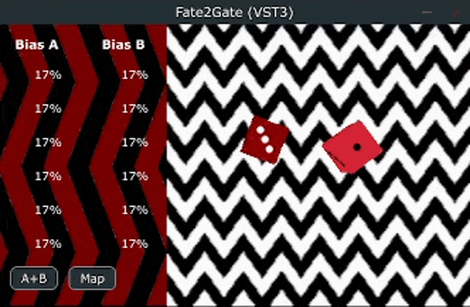
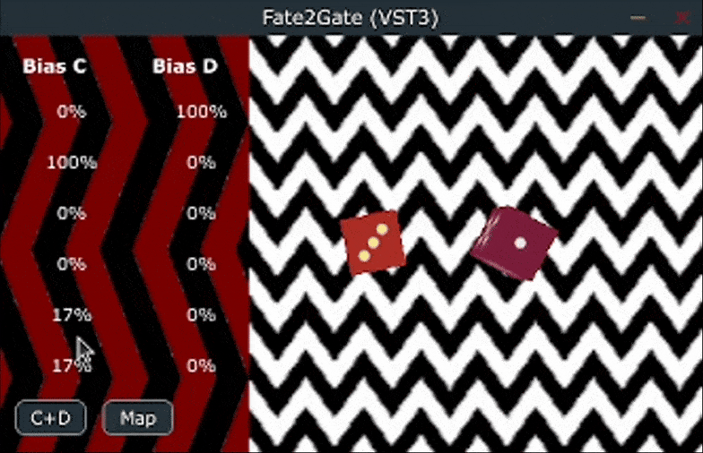
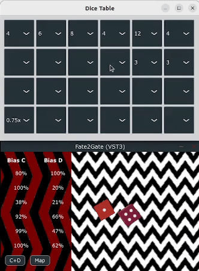

Fate2Gate is a gate sequencer that simulates weighted dice throws through a real-time rigid-body physics engine. Outcomes are drawn from user-defined bias distributions, with motion dynamics modulated by Shannon entropy. The system maps stochastic decisions to rhythmic gates, enabling physically grounded, information-theoretic pattern generation; wrapped in a playful, interactive interface.
Click a single die to roll it alone. Click outside to roll all dice at once. You can also change the dice group.

Each die has a 6-dimensional bias vector controlling the probability distribution over its faces. These biases are user-editable via sliders, shaping the roll tendencies that drive the physics simulation.
Rolls are sampled from the discrete distribution defined by the normalized bias vector:
H = -∑₍i=1→6₎ pᵢ · log₂(pᵢ) where pᵢ = wᵢ / ∑ⱼwⱼ Hₘₐₓ = log₂(6) ≈ 2.585 bits
High entropy → greater wobble and chaotic dynamics
Low entropy → minimal wobble, die locks reliably to the favored face

Use the Dice Table to define values for each face.
